Carry less weight
Support the bag while rolling, reducing the load held through the handle.
Db Equipment · Master’s thesis · 2025
My master’s thesis with Db Equipment explored a wheel system for easier golf travel. Working in a two-person team, I developed a full-scale functional prototype through user research, mechanism development and hands-on testing.
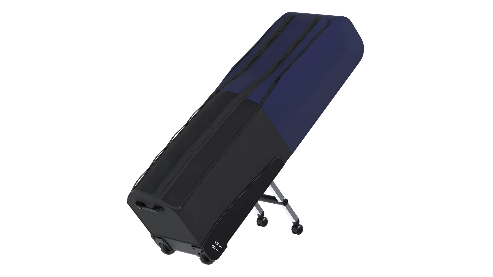
An animation of the final travel-bag design.
I led most of the design and digital development and 3D printed the final prototype. This was a two-person master’s thesis at Luleå University of Technology, developed with regular feedback from Db. Our scope was the wheelhouse; Db’s team developed the rest of the bag and supplied its fabric prototype.
Golf travel bags can be bulky to steer, tiring to pull and difficult to keep stable during stops. We combined a train journey with golf equipment, ten interviews, a survey with 72 responses and competitor benchmarking to understand those frustrations.
Protection mattered most to respondents, followed by manoeuvrability. Within our wheelhouse scope, that translated into three priorities: support the bag’s weight, make it easier to steer and keep the system compact when packed away.
Support the bag while rolling, reducing the load held through the handle.
Balance steering and stability when moving, turning and stopping.
Fold the wheels close to the bag for transport and handling.
Our first concept used two extra wheels on folding legs at the back of the bag to help carry its weight while rolling. These legs swung out automatically as the bag tilted, reducing the load held through the handle. The mechanism worked in the prototype, but feedback from Db and its production partner exposed the trade-off: too many components, too much assembly complexity and too high a manufacturing cost.
We kept the goal of one-handed control and restarted the development phase. The second cycle focused on fewer components and familiar mechanical principles, leading to a direct button-and-pin locking system.
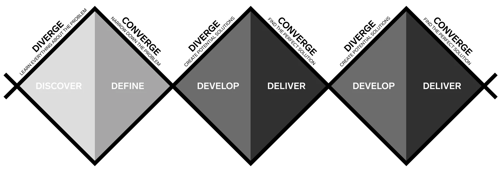
The final mechanism connects a central button to locking pins through rods inside the support legs. Pressing the button releases both sides; releasing it lets the pins engage when the legs reach the folded or extended position.
We refined the pivot placement, handle clearance and spring resistance through quick physical tests. The legs fold close to the body, while the deployed swivel wheels support the bag during movement.
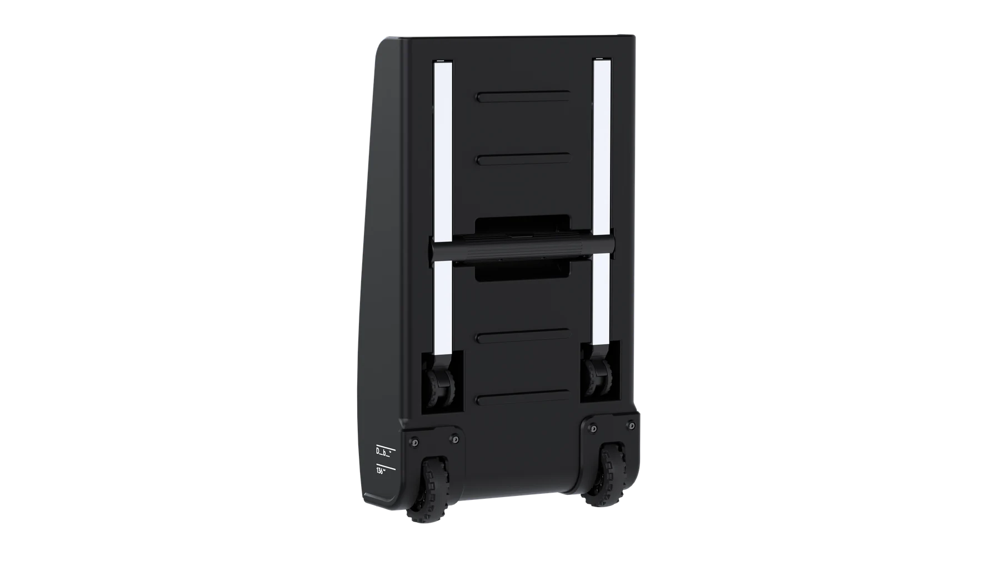
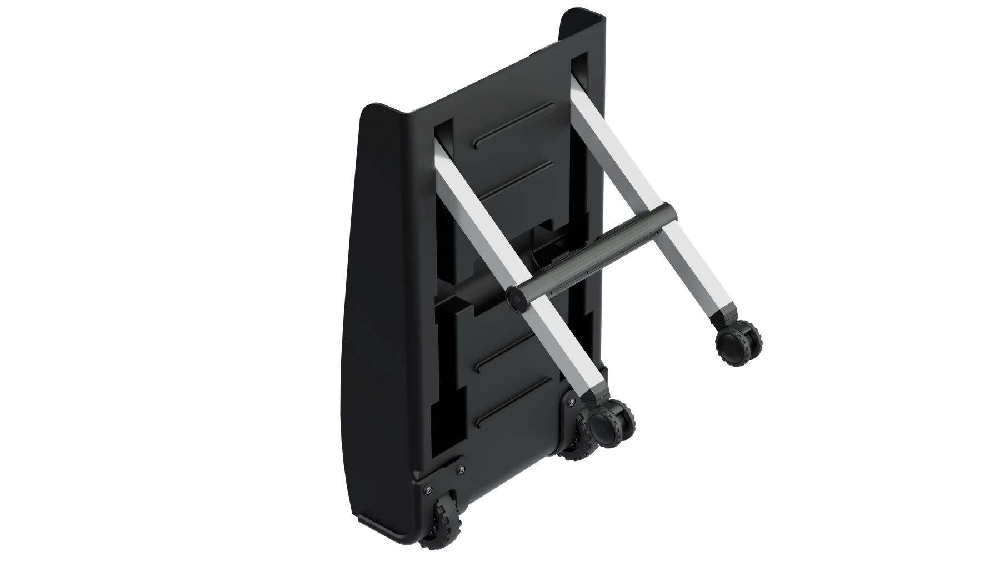
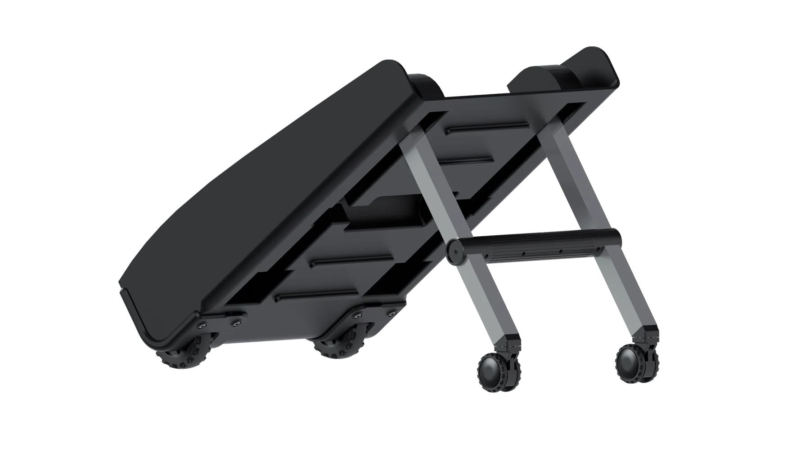
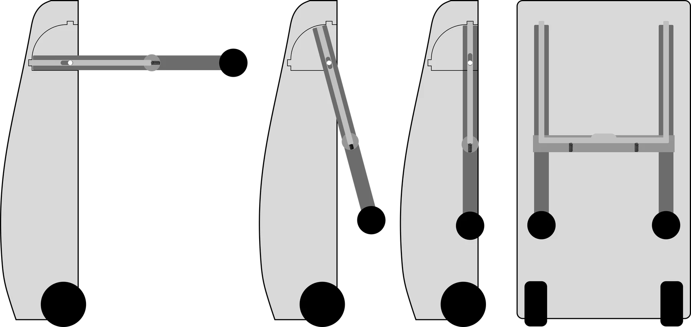
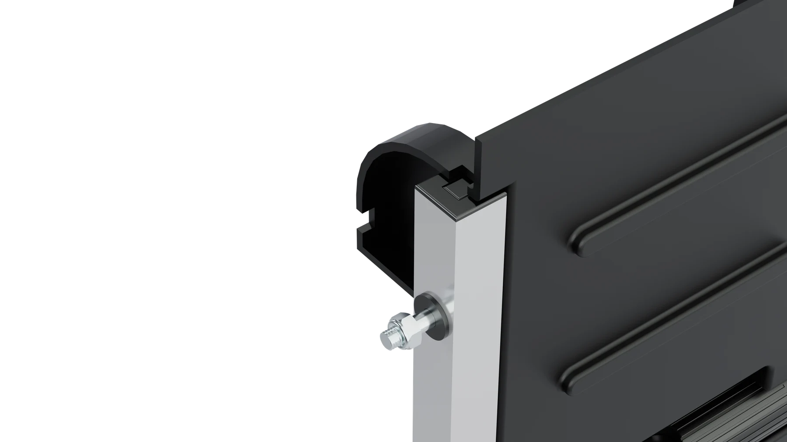
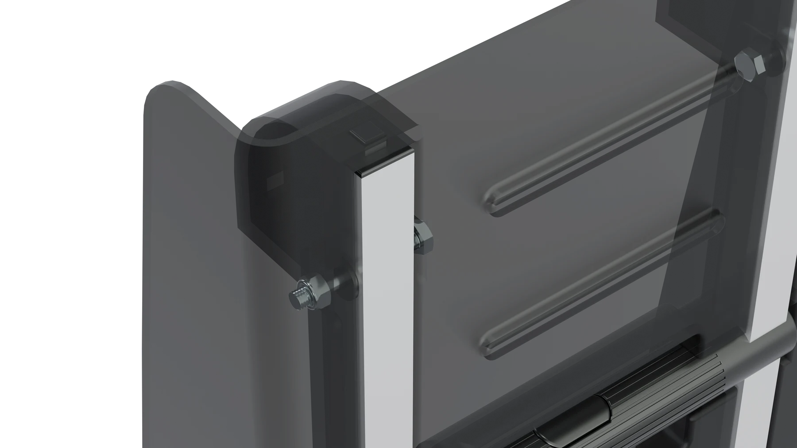
I developed the digital wheelhouse in Siemens NX and 3D printed the final prototype. The physical build combined printed structural parts, aluminium legs, bearings, fasteners and wheels supplied by Db.
We fitted it to a fabric prototype developed by Db’s team. The physical build connected the mechanism to the real bag, while protective ribs and a silhouette informed by Db’s Hugger helped the wheelhouse fit the brand’s product family.
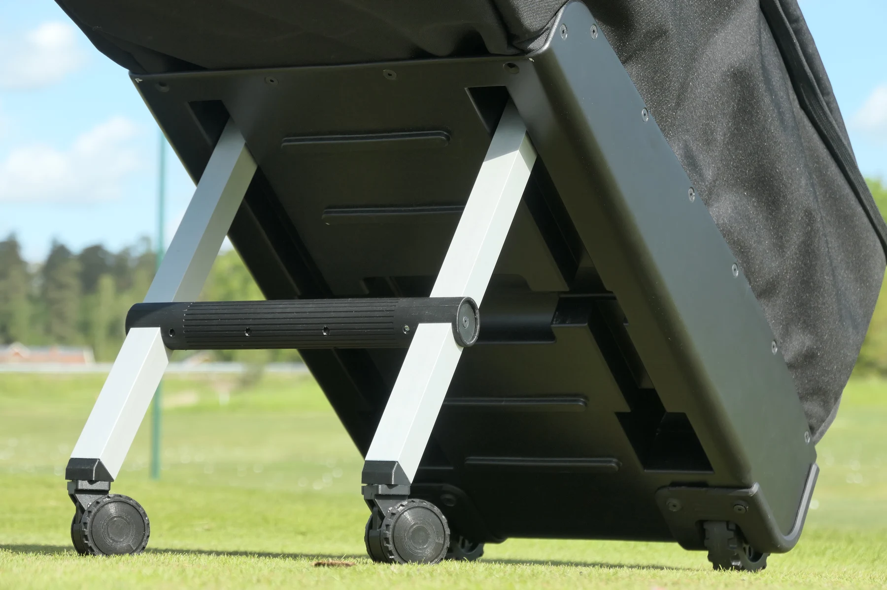
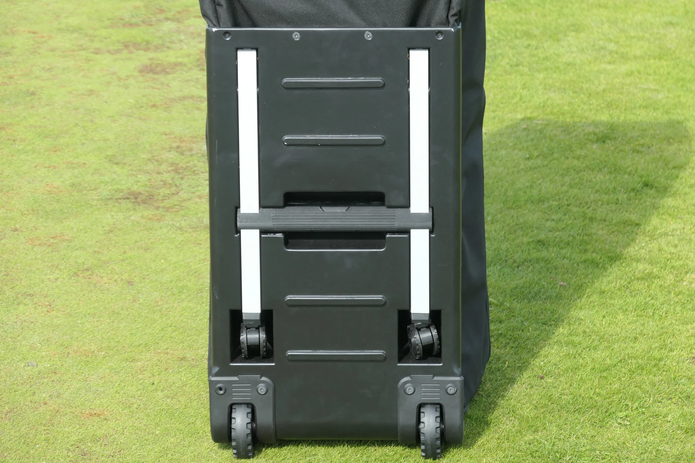
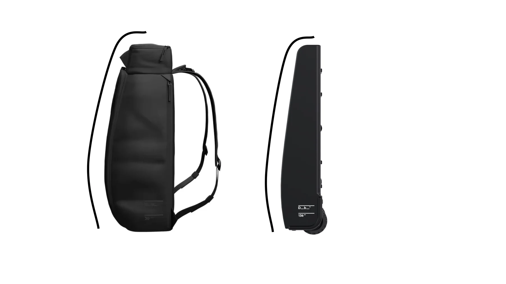
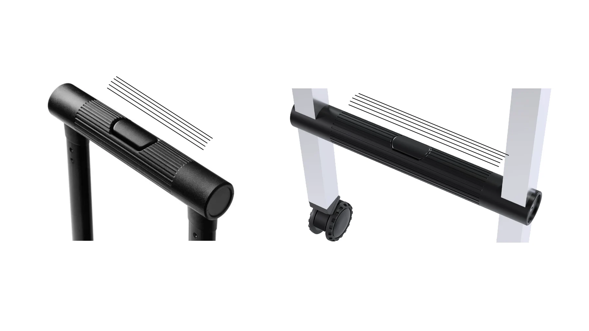
Ten participants tested both our prototype and a standard golf travel bag. Tasks included rolling, turning, lifting over a curb and loading into a car. We alternated which bag was tested first, then collected ratings for mobility, stability and ease of use.
The prototype received higher average ratings in all three categories. This small comparative evaluation supported the design direction and gave Db a foundation for further development.
10 participants. Averages calculated from the recorded responses in thesis Appendix 5. This was an informal prototype evaluation.
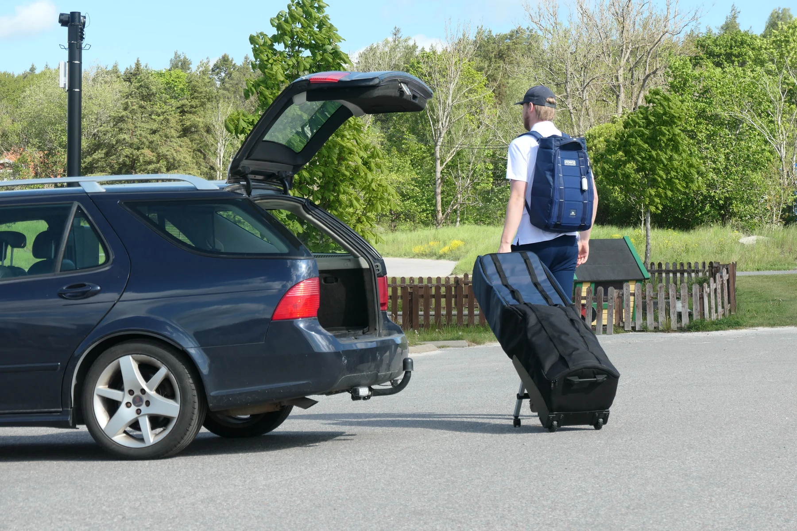
I learned that a mechanism can feel simple to use while still being too complex to manufacture. The first concept made that trade-off visible. Restarting the development cycle taught me to judge part count, assembly and feasibility alongside the interaction, and to use CAD and physical prototypes together rather than treating them as separate stages.